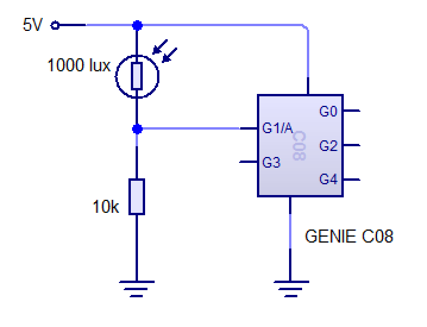

Mathematics
Table of Contents
1 Introduction
Ohm's Law
- Before you can do anything to design and create new, original projects, you'll need to understand three fundamental electronic concepts.
- Voltage, is the difference in energy level between two points in a circuit, which will allow electrons to move through a conductor. The more difference in energy levels there is, the larger the amount of current can be drawn, and the larger item they can power. A basic red LED might only need 2.7V to run, whereas a laptop might need 24V, and a large electric motor moving a lift might need 415V to operate.
- Current is a measure of how many electrons pass a particular point in the circuit per second. Higher current (measured in Amps) means faster electron flow in the circuit. The process of moving electrons through a material generates frictional heat. If the wire used in a product is too thin, and too much current passes through it, the wire will melt! This is the principal on which fuses are made.
- Resistance is a measure of to what extent a material resists the flow of current in a circuit, and is measured in Ohms. Good conductors of electricity (like copper and gold) have very low resistance (1-2 Ω), and insulators (like rubber and plastic) have a high resistance (several million Ohms).
- Another explanation (with interactive demonstrations) can be seen here.
- Another explanation of the concepts can be seen over at SparkFun.
- Ohm's law is the mathematical formula that shows the relationship between Voltage (V), Current (I) and Resistance (R).
- V = IR
- In the exam, you'll sometimes be asked to calculate one of the values, given two of the others.
- E.g. According to its datasheet, an LED can take a maximum of 2.5v, and has a safe current of up to 20mA. If powered by a 6v battery, what size resistor will be needed to protect it?
- LEDs have very low internal resistance, and will blow instantaneously if they try and handle all too much current.
- If we have a 6V potential difference in the circuit, we need to remove 3.5V (6V - 2.5V) from the circuit, to leave 2.5V for the LED. V=2.5
- Just like any other physics question, we need to use the correct SI unit to perform our calculation. 1000mA = 1A, so 100mA = 0.1A, 10mA = 0.01A and so 20mA = 0.02A. I = 0.02
- We now have values for V and I, and we need to find R. Through basic re-arrangement, our formula becomes: R = V / I
- R = V / I
- R = 3.5 / 0.02
- R = 175Ω
- It turns out that 175Ω isn’t a standard resistor size we can buy, so we go to the next largest size, which is 180Ω (220Ω would also work here).
Electrical Power
- Power is the product of Voltage and Current, and is measured in Watts. This is expressed mathematically as:
- P = V I
- Example Use: Is a 0.25W resistor adequate for the LED example above?
- The amount of power the resistor has to dissipate can be calculated as…
- P = 3.5 x 0.02 = 0.07W
- So a 0.25W resistor would be suitable. In fact, it would be suitable for carrying the current of up to 3 LEDs.
Series and Parallel Resistance
- Resistors in Series
- To calculate the overall resistance achieved when connecting together resistors in series, we add them together. E.g.
- RT = R1 + R2
- Example: Two resistors are connected together in series in a circuit. The colour codes on the first resistor is green, blue, black, gold. The colour code on the second resistor has been rubbed off. When a multi-meter is placed across both resistors, the meter reads 276Ω. What is the resistance of the unmarked resistor?
- 276 = 56 + R2
- R2 = 276 - 56 = 220Ω
- Resistors in Parallel
- 1/RT = 1/R1 + 1/R2 + 1/R3…
The Potential Divider
- A potential divider allows engineers to reduce the amount of voltage in a circuit. This is one of the most elemental circuits, and is used in various forms in PIC circuit design.

- V1 = (R1 / (R1 + R2)) x Supply voltage (VS)
- V2 = (R2 / (R1 + R2)) x Supply Voltage (VS)
- By placing two resistors in series, different voltages can be achieved.
- This is handy when connecting analogue sensors to PIC chips.
- It's also useful to put a PD before the base of a transistor (come back to this statement later in the course when you've covered more of the theory!) to trigger different components.
- While only a low current is available (resistors reduce current flow), having an LDR (resistance increases as light level drops) and a fixed (usually 10k) resistor in a potential divider setup will allow varying amounts of voltage to be sent into the analogue pin of the PIC.
- The Genie PIC chips we have contain an 8-bit ADC (Analogue to Digital Convertor), which convert a voltage between 0-5V to a number between 0 and 255.

- When the light level is very high (1000 lux in the shot above), the resistance in the LDR drops to around 400Ω. As a result, most of the electrical energy in the potential divider will flow into the analogue input, as this is easier than having to travel through a 10k resistor.
- In this case, is we asuming 400Ω of resistance through the LDR, and a 10kΩ resistor are forming a potential divider, we can use the first of the formulae shown above…
- V1 = (R1 / (R1 + R2)) x Supply voltage (VS)
- V1 = (10000 / (10000 + 400)) x 5
- V1 = (10000 / 10400) x 5
- V1 = 0.962 x 5
- V1 = 4.81
- There would be a 4.81V potential difference at V1.
- The ADC will interpret this through a simple process…
- 4.81 / 5 = 0.962 (5 is the input voltage for the PIC in this demo)
- 0.962 * 255 = 245.31
- So we report to the PIC chip that we've got an analogue reading of 245.
- The ADC will interpret this through a simple process…
- When the light level drops, the LDR's resistance will rise up to a few million Ohms. This will mean that by the time current has passed through the LDR, much of the energy will have been dissipated (in the form of heat), leaving a much smaller potential difference between the analogue input and 0V. The ADC will interpret this voltage as a low number.
- Despite the temptation to do so, a PD isn't suitable for creating power rails that need to power a load (e.g. Stepping down 12V to 3V to drive a motor), as all the current you'd need to draw will also have to pass through R2 first.
- Further reading: Sparkfun
{kind=link}
Transistors
- Current Gain = Collector Current / Base Current
2 Mechanisms
Ratio of Simple Gears / Pulleys
- Gear Ratio = Number of teeth on driven gear / Number of teeth on driver gear
- Velocity Ratio = Diameter of driven pulley / Diameter of driver pulley
- Output Speed = Input speed /Gear (or velocity) ratio
Ratio of Simple Gears / Pulleys
- Mechanical Advantage
- Mechanical Advantage (MA) = Load / Effort
Forces
- Moments = Force x Distance
- Sum of clockwise moments = sum of anti-clockwise moments
3 Practice questions
Recap
- A 9v DC motor motor rated at 0.673A is to be powered by a 12v supply. What size resistor should be used to make it run at it’s maximum speed?
- i) A 60W lightbulb in a house is running on a standard 240v AC power supply. How much current does it draw? ii) UK fuses can be 1A, 3A, 5A or 13A. This refers to how much current can be drawn through the fuse without it “blowing”. What size fuse should be fitted to a 1600W hairdryer?
- A circuit being designed has a 12v supply, but needs a 3v rail, to be made with a potential divider. Suggest two resistor values that could provide this, and confirm it in circuit wizard.
- What’s the overall resistance achieved by connecting together 3 100Ω resistors in series in a circuit?